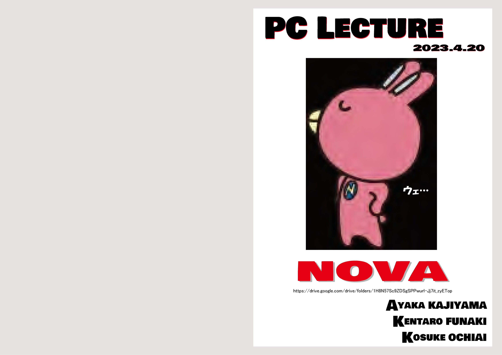
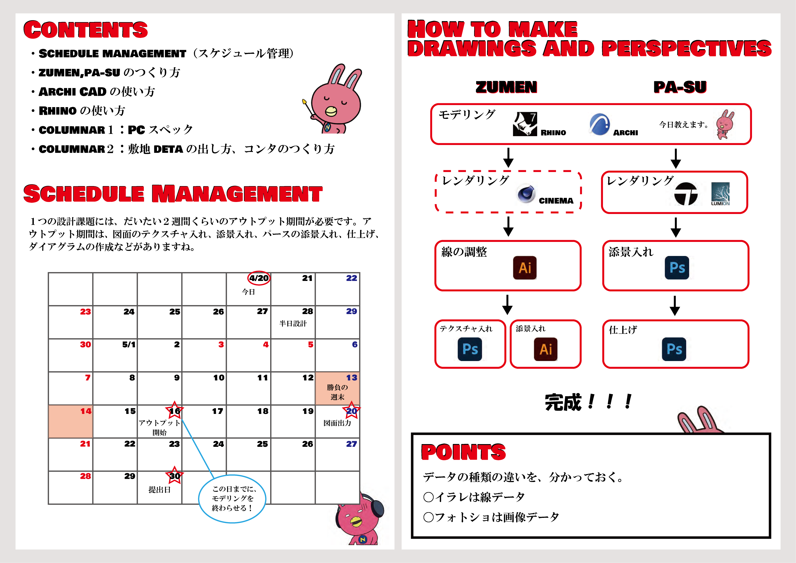
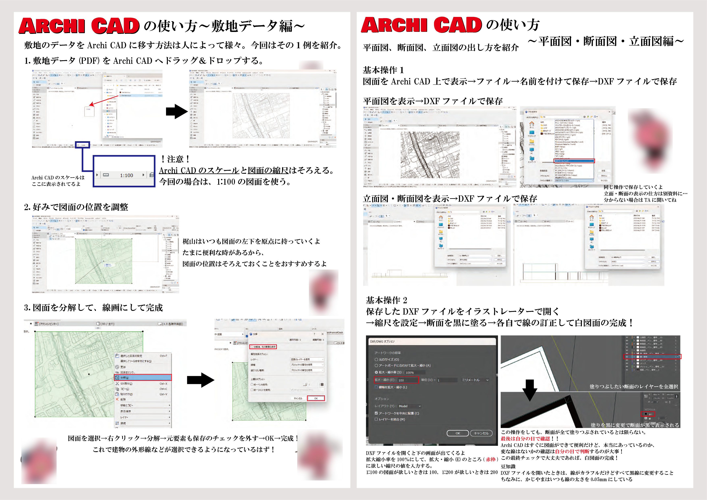
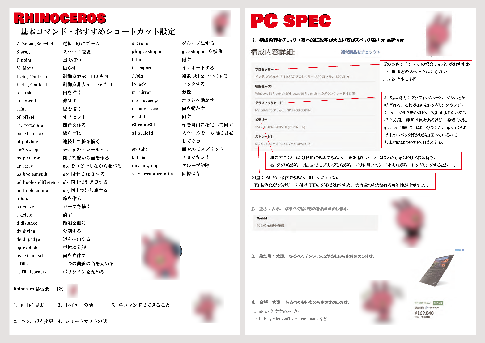
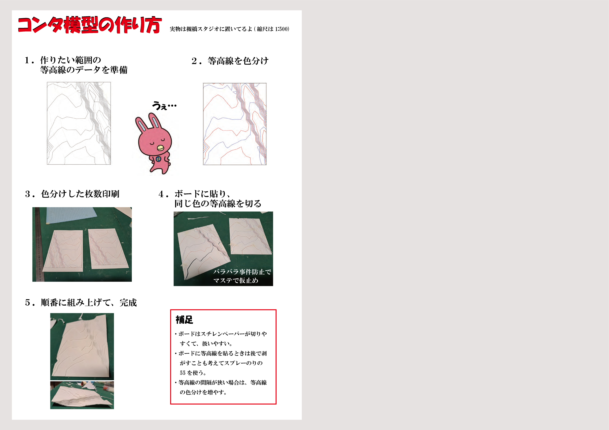

PC LECTURE!!! 2023
駅前留学うさぎを無断で乱用。怒らないで欲しい。
M1の小野原さんは、B3の僕に手取り足取り教えてくれた。僕もM1になったので、当時の小野原さんのように、B3たちにしっかり教えなければと思った。
一緒にTAをする二人を誘って三人で、まずは買うべきPCについて、続いてソフトの使い方、模型のつくり方、設計のスケジュールの進め方、そういうことを全部伝えようと試みる。
製図室の一部屋にパンパンにB3を集めて、一生懸命喋った。リアクションはあんまりなかった。
上手く伝わっていないのかもしれない。ひとまず、小野原さんから教えてもらったことは全て伝えた。
神戸大学の建築学科もホグワーツみたいに、「助けを求める者には、必ずそれが与えられる」ようになって欲しいと願っている。
信頼と愛の原則だ。僕はそれらが世界の基底にあると信じているし、少しでも多くの人間がそう思えるようにしたいと思っている。
小野原さんとダンブルドアから、僕はそういったことを学んだ。設計なんて別に上手くなくても、なんでもいいから、そういったことが皆に伝わっていて欲しいと思う。
［制作：落合洸介(5.6p) 梶山彩花(3.4.7p) 舟木健太郎(1.2p)］




